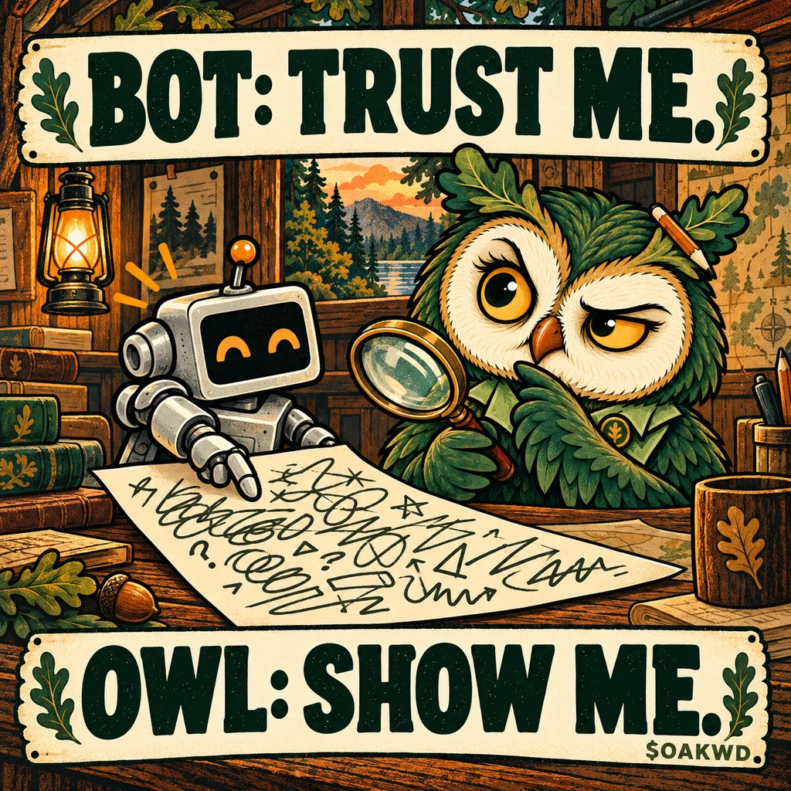
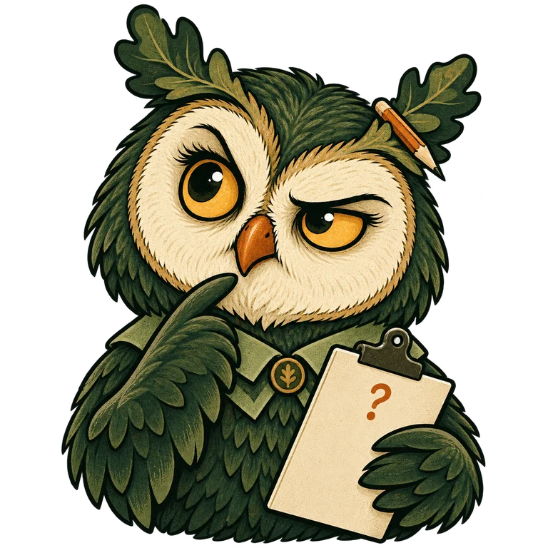
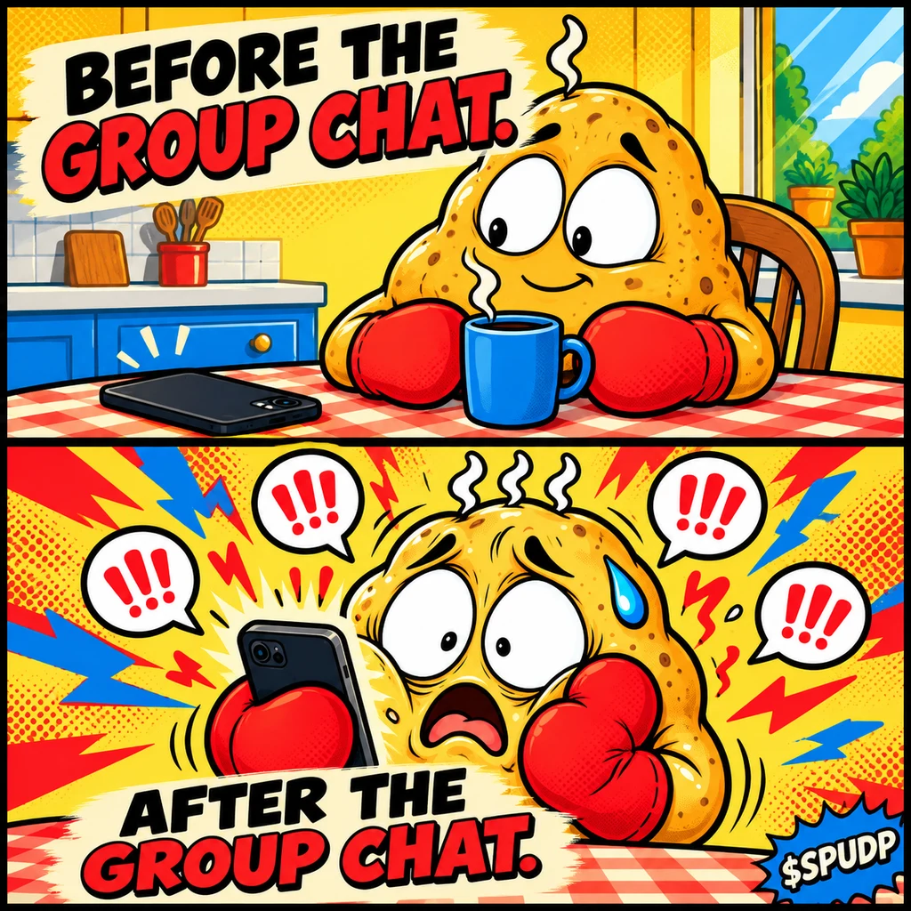

01 / QUICK LOOK, LONG REACTIONSAVE THE MEME ↗

SPUDMaximum starch. Minimum composure.
A potato with absolutely
no poker face.
You opened the timeline for one calm look. The timeline had other plans.
Spud Panic is an original potato character for that instantly recognizable feeling: too many tabs, too much noise, and a face that gives away absolutely everything.
One sweaty spud. Two red oven mitts. A familiar joke for anyone who has ever refreshed a feed one time too many.
Inspired by the everyday “hot potato” metaphor. Independent artwork and project; no affiliation with Shayne Coplan, Polymarket, or any existing potato token.
Save a spud.
Caption a situation.
Let the face do the talking.


Me: just a quick look. Also me: refresh, refresh, refresh.
Bring your everyday overheated moment. Save a meme and give the potato something to react to.
CHECK THE REAL TOKEN DETAILS ↓The character is overheated. The facts should be easy to read.
Spud Panic is an independent Ethereum meme concept. No verified contract or launch details have been supplied yet.
READ THE ADDRESS.
KEEP THE JOKE.
No. This is an independent original character and meme concept. The public hot-potato metaphor is context, not an endorsement or official connection.
No. $SPUDP is a proposed separate identity. Do not use another project's token address as this project's contract.
No. The joke reflects a familiar experience; it does not make trading predictable or safe. A meme token can lose value.
Trading controls stay pending until a verified Ethereum contract and trading link are published. The images and captions are available now.